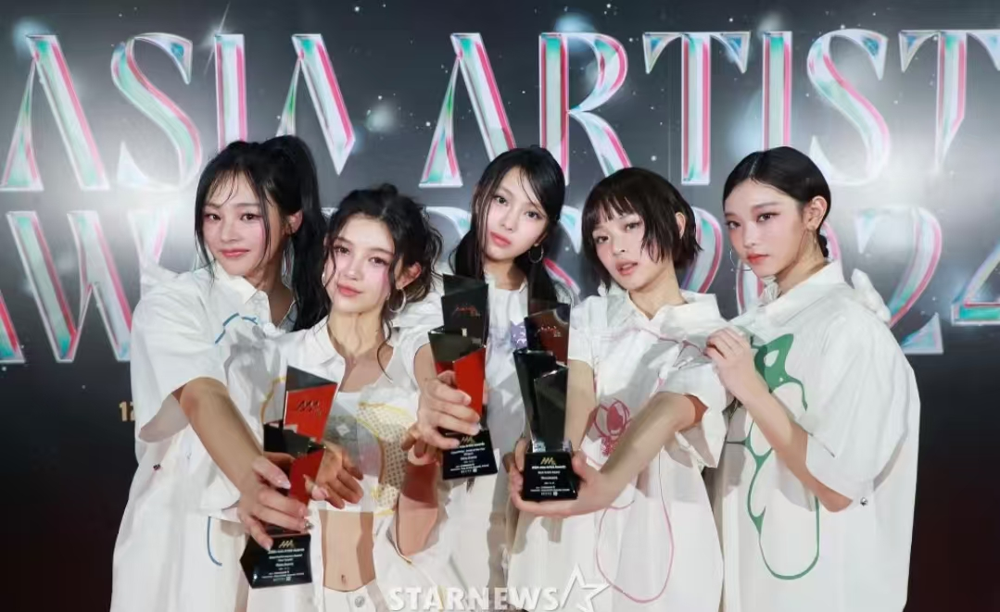

.jpg) |
|
.JPG) |
|
| 差异化的音乐审美、完整统一的作品叙事、松弛自然的成员形象以及精准的全球化布局，为 NewJeans 积攒了超高人气与口碑。这份持续的热度，最终转化为亮眼的成绩，让她们拿下众多奖项、刷新多项 K-pop 纪录：
2025年1月 第39届金唱片大赏 Cosmopolitan Artist Award 获奖 2025年1月 第39届金唱片大赏 数码音源本赏 获奖 2024年11月 2024年第一届KGMA音乐奖Best Artist 获奖 2024年11月 2024年第一届KGMA音乐奖Grand Artist 获奖 2024年10月 2024年MAMA最佳女子团体奖 提名 2024年6月 2024首尔电视剧大赏OST 奖候补 提名 2024年1月25日 2024公告牌女性音乐奖“年度最佳组合奖”获奖 2024年1月6日 第38届金唱片大赏-最佳数字单曲奖 获奖 2024年1月日 第33届首尔歌谣大赏-本赏奖 获奖 2024年1月 第33届首尔歌谣大赏-最佳应援 获奖  2023年12月 亚洲流行音乐大奖2023最佳团体海外《Get Up》获奖 2023年12月2日 2023MMA Meoln年度TOP10 获奖 2023年12月2日 2023MMA年度艺人 获奖 2023年12月2日 2023MMA年度歌曲《Ditto》获奖 2023年12月 2023MMA最佳女团奖 获奖 2023年12月 2023AAA奖-Hot trend奖 获奖 2023年10月27日 2023年美国公告牌音乐奖（BBMA）- 最佳国际K-POP歌曲 提名 2023年10月27日 2023年美国公告牌音乐奖（BBMA）- 最佳K-POP专辑 提名 2023年10月27日 2023年美国公告牌音乐奖（BBMA）- 最佳国际K-POP歌手 提名 2023年10月27日 2023年美国公告牌音乐奖（BBMA）-最佳公告牌国际歌手（除美国）提名 2023年9月12日 第40届MTV音乐录影带大奖（MTV VMA）- 年度最佳组合 提名 2023年8月23日 日本唱片协会白金认证《OMG》获奖 2023年6月27日 日本唱片协会白金认证《DITTO》获奖2023年1月7日 第37届金唱片大赏 - 数字音源部门本赏《Attention》获奖 2023年1月7日 第37届金唱片大赏 - 新人奖 获奖 2022年12月13日 2022 Asia Artist Awards IN JAPAN(2022 AAA)-新人奖 获奖 2022年12月13日 2022 Asia Artist Awards IN JAPAN(2022 AAA)-年度表演奖大赏《Attention》获奖 2022年11月26日 2022 MELON MUSIC AWARDS(MMA)-年度新人 获奖 2022年11月26日 2022 MELON MUSIC AWARDS(MMA)-TOP10 获奖 2022年10月28日 THE-K Billboard Awards-Hot Rookie 获奖 2022年10月8日 2022 THE FACT MUSIC AWARDS-Next Leader 获奖 2022年8月28日 SBS人气歌谣-第一位《Attention》获奖 2022年8月21日 SBS人气歌谣-第一位《Attention》获奖 2022年8月20日 MBC Show! 音乐中心-第一位《Attention》获奖 2022年8月19日 KBS2 音乐银行-第一位《Attention》获奖 2022年8月21日 Mnet M! Countdown-第一位《Attention》获奖 |